같은 샘플 콘텐츠로 구성한 편집 디자인, 그래픽 스튜디오, 작업 콘솔입니다. 이미지를 누르면 원본을 확인할 수 있습니다.
따뜻한 중성 바탕과 큰 제목, 절제된 파란 강조. 가벼운 목록과 추상 풍경으로 개인적인 작업 공간을 구성했습니다.
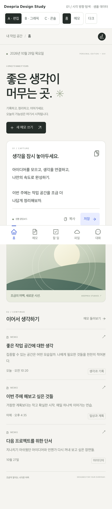
어두운 메뉴와 라임, 바이올렛의 대비. 각진 면과 굵은 타이포그래피로 창작 도구의 성격을 강조했습니다.
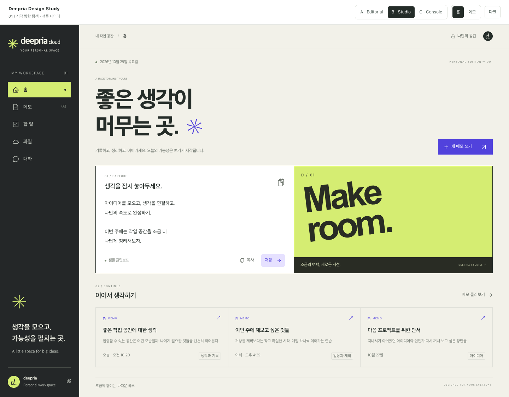
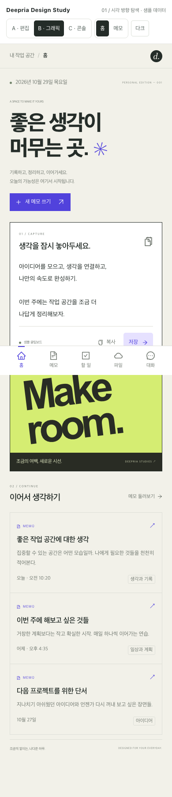
조밀한 메타 정보와 격자, 궤도 그래픽. 정밀한 작업 도구의 분위기를 담은 어두운 화면입니다.
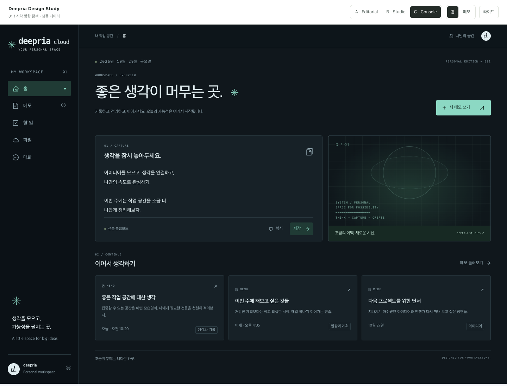
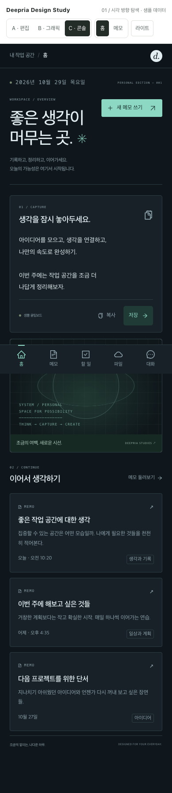
기존 화면은 샘플 응답으로 캡처했습니다. 운영 데이터는 사용하지 않았습니다.
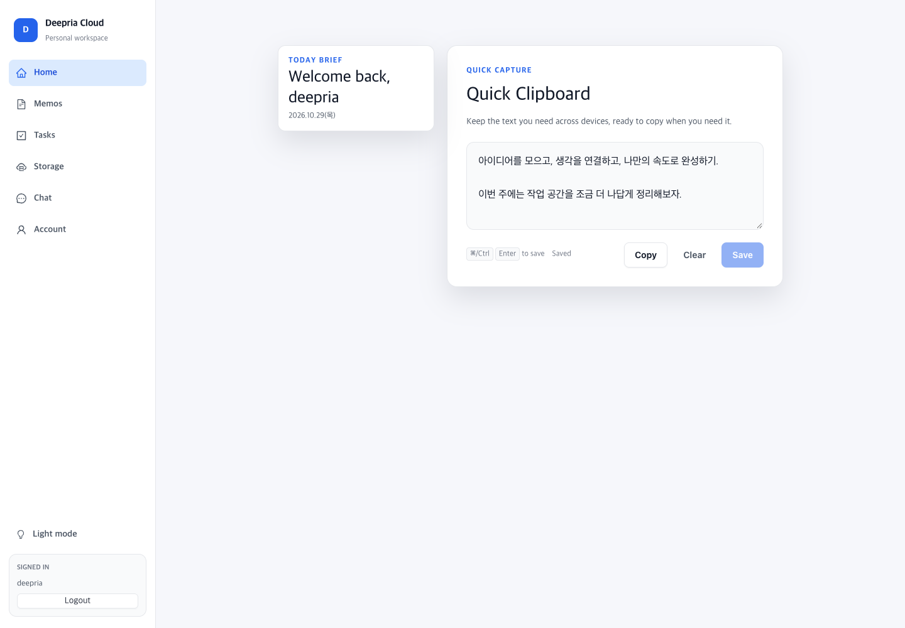
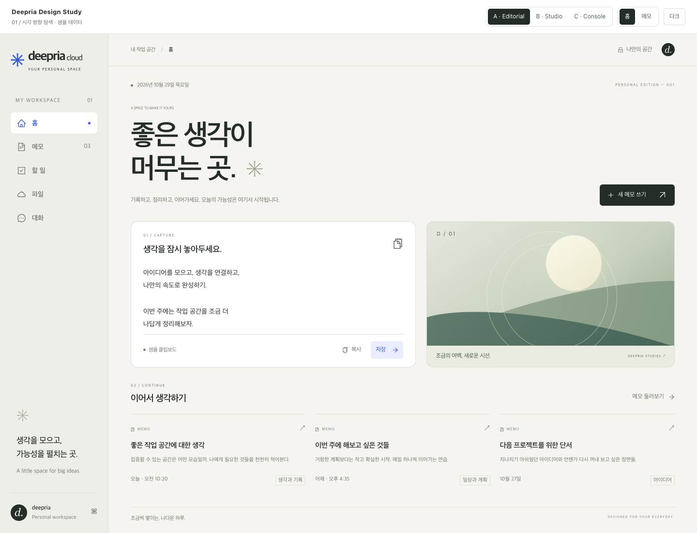
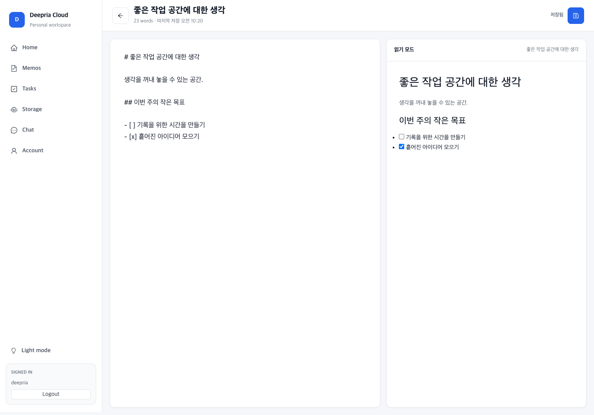
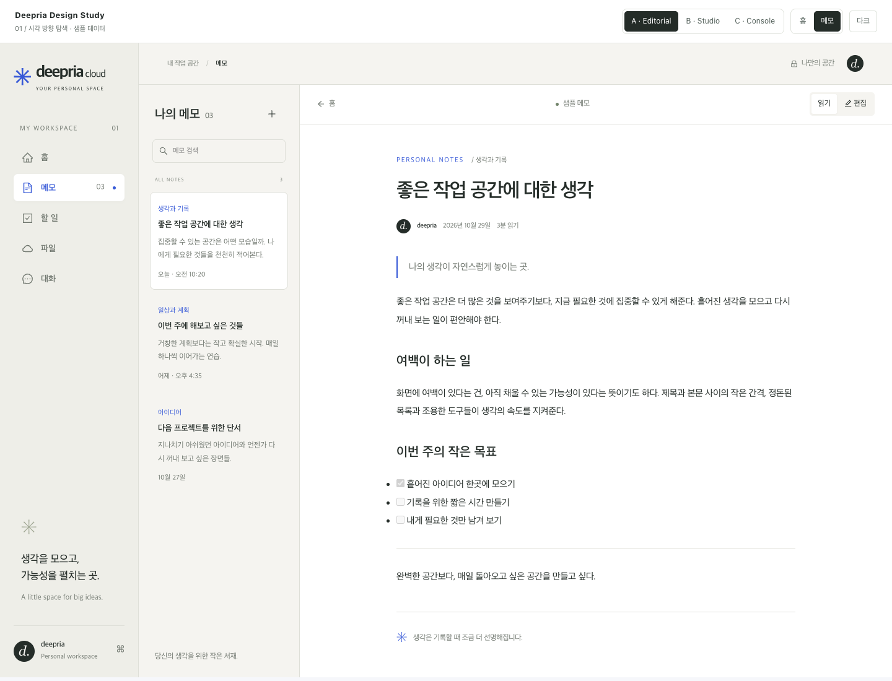
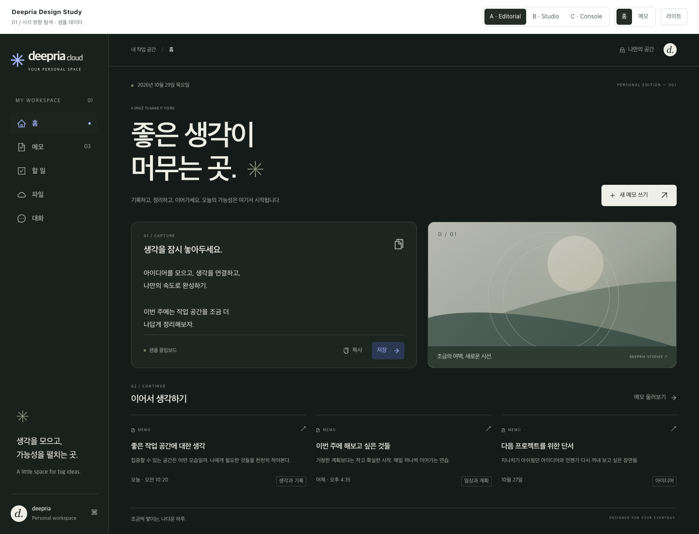
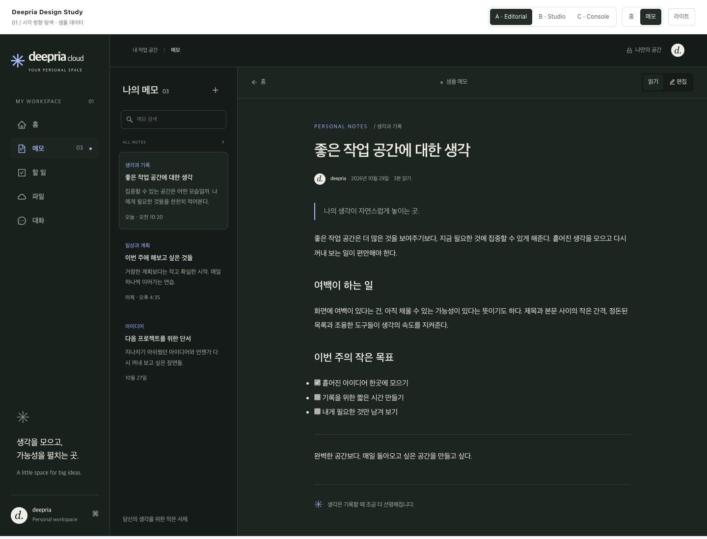